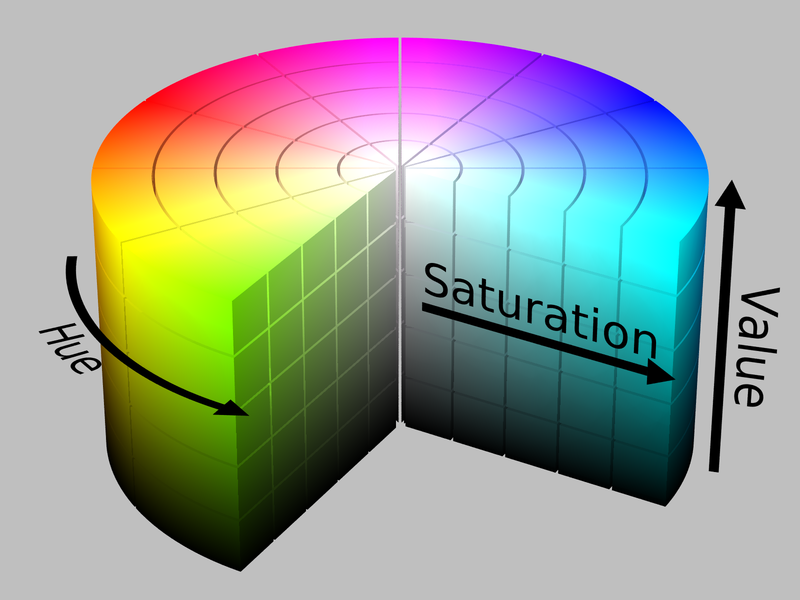
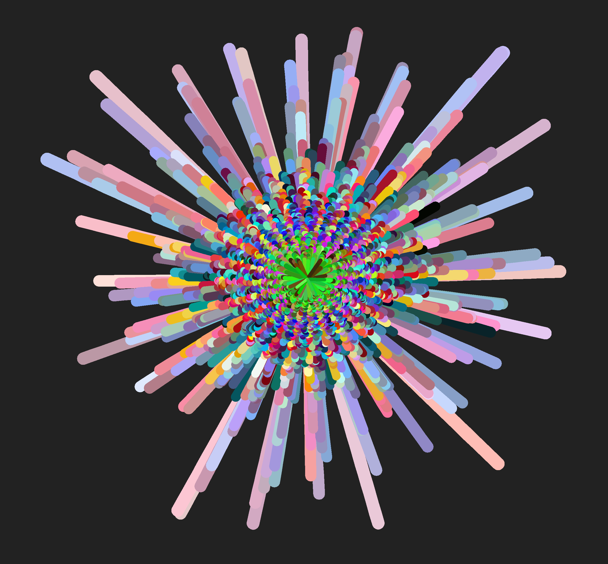
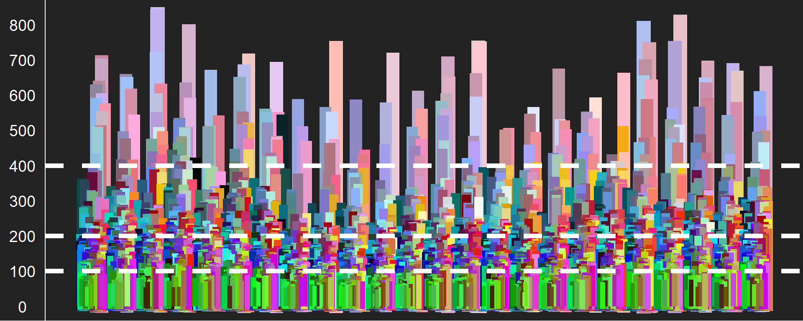
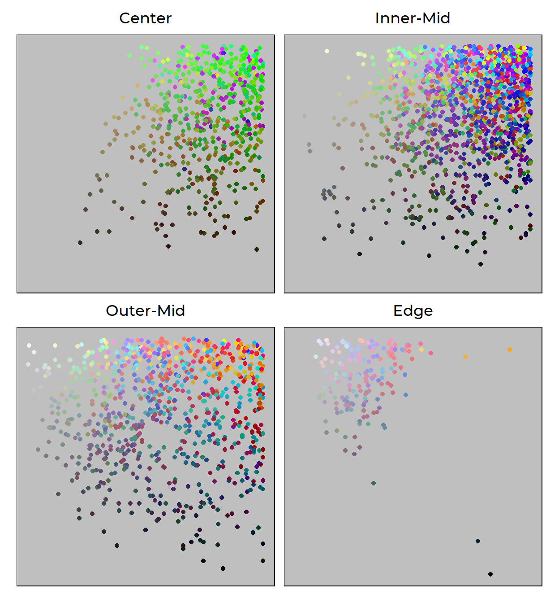

Analysis of @everycolorbot’s tweets
June Choe ![]()
Introduction
I, along with nearly two-hundred thousand other people, follow @everycolorbot on twitter. @everycolorbot is a twitter bot that tweets an image of a random color every hour (more details on github). It’s 70% a source of inspiration for new color schemes, and 30% a comforting source of constant in my otherwise hectic life.
What I’ve been noticing about @everycolorbot’s tweets is that bright, highly saturated neon colors (yellow~green) tend to get less likes compared to cool blue colors and warm pastel colors. You can get a feel of this difference in the number of likes between the two tweets below, tweeted an hour apart:
0x54e14b pic.twitter.com/Aw0cwm7uy8
— Every Color (@everycolorbot) October 15, 2020
0xaa70a5 pic.twitter.com/NMBF3mffS4
— Every Color (@everycolorbot) October 15, 2020
This is actually not a big surprise. Bright pure colors are very harsh and straining to the eye, especially on a white background.1 For this reason bright colors are almost never used in professional web design, and are also discouraged in data visualization.
So here’s a mini experiment testing that claim: I’ll use @everycolorbot’s tweets (more specifically, the likes on the tweets) as a proxy for likeability/readability/comfortableness/etc. It’ll be a good exercise for getting more familiar with different colors! I’m also going to try a simple descriptive analysis using the HSV color representation, which is a psychologically-motivated mental model of color that I like a lot (and am trying to get a better feel for).

Figure 1: HSV cylinder
Setup
Using {rtweet} requires authentication from twitter. The steps to do so are very well documented on the package website so I wouldn’t expect too much trouble setting it up if it’s your first time using it. But just for illustration, here’s what my setup looks like:
api_key <- 'XXXXXXXXXXXXXXXXXXXXX'
api_secret_key <- 'XXXXXXXXXXXXXXXXXXXXX'
access_token <- "XXXXXXXXXXXXXXXXXXXXX"
access_token_secret <- "XXXXXXXXXXXXXXXXXXXXX"
token <- create_token(
app = "XXXXXXXXXXXXXXXXXXXXX",
consumer_key = api_key,
consumer_secret = api_secret_key,
access_token = access_token,
access_secret = access_token_secret
)
After authorizing, I queried the last 10,000 tweets made by @everycolorbot. It ended up only returning about a 1/3 of that because the twitter API only allows you to go back so far in time, but that’s plenty for my purposes here.
colortweets <- rtweet::get_timeline("everycolorbot", 10000)
dim(colortweets)
[1] 3238 90As you see above, I also got back 90 variables (columns). I only care about the time of the tweet, the number of likes it got, and the color it tweeted, so those are what I’m going to grab. I also want to clean things up a bit for plotting, so I’m going to grab just the hour from the time and just the hex code from the text.
And here’s what we end up with:
| likes | hour | hex |
|---|---|---|
| 36 | 15 | #65f84e |
| 65 | 14 | #32fc27 |
| 89 | 13 | #997e13 |
| 140 | 12 | #ccbf09 |
| 303 | 11 | #665f84 |
| 75 | 10 | #b32fc2 |
Here is the link to this data if you’d like to replicate or extend this analysis yourself.
Analysis
Below is a bar plot of colors where the height corresponds to the number of likes. It looks cooler than your usual bar plot because I transformed the x dimension into polar coordinates. My intent in doing this was to control for the hour of day in my analysis and visualize it like a clock (turned out better than expected!)
colortweets_df %>%
arrange(-likes) %>%
ggplot(aes(hour, likes, color = hex)) +
geom_col(
aes(size = likes),
position = "dodge",
show.legend = FALSE
) +
scale_color_identity() +
theme_void() +
theme(
plot.background = element_rect(fill = "#222222", color = NA),
) +
coord_polar()
arrange() here: it’s how I tell ggplot to plot the longer bars first then the smaller bars, minimizing the overlap!

I notice at least two interesting contrasts in this visualization:
Neon colors (yellow, green, pink) and dark brown and black seems to dominate the center (least liked colors) while warm red~blue pastel colors dominate around the edges (most liked colors)
There also seems to be a distinction between pure blue and red in the inner-middle circle vs. the green~blue pastel colors in the outer-middle circle.
So maybe we can say that there are four clusters here:
Least liked: Bright neon colors + highly saturated dark colors
Lesser liked: Bright pure/near-pure colors
More liked: Darker pastel RGB
Most liked: Lighter pastel mixed colors
Now’s let’s try to quantitatively describe each cluster.
First, as a sanity check, I’m just gonna eyeball the range of likes for each cluster using an un-transformed version of the above plot with units. I think we can roughly divide up the clusters at 100 likes, 200 likes, and 400 likes.
colortweets_df %>%
arrange(-likes) %>%
ggplot(aes(hour, likes, color = hex)) +
geom_col(
aes(size = likes),
position = "dodge",
show.legend = FALSE
) +
geom_hline(
yintercept = c(100, 200, 400),
color = "white",
linetype = 2,
size = 2
) +
scale_y_continuous(breaks = scales::pretty_breaks(10)) +
scale_color_identity() +
theme_void() +
theme(
plot.background = element_rect(fill = "#222222", color = NA),
axis.line.y = element_line(color = "white"),
axis.text.y = element_text(
size = 14,
color = "white",
margin = margin(l = 3, r = 3, unit = "mm")
)
)

If our initial hypothesis about the four clusters are true, we should see these clusters having distinct profiles. Here, I’m going to use the HSV representation to quantitatively test this. To convert our hex values into HSV, I use the as.hsv() function from the {chroma} package - an R wrapper for the javascript library of the same name.
colortweets_df_hsv <- colortweets_df %>%
mutate(hsv = map(hex, ~as_tibble(chroma::as.hsv(.x)))) %>%
unnest(hsv)
furrr::future_map() here myself because I found the hex-hsv conversion to be sorta slow.
And now we have the HSV values (hue, saturation, value)!
| likes | hour | hex | h | s | v |
|---|---|---|---|---|---|
| 36 | 15 | #65f84e | 111.88235 | 0.6854839 | 0.9725490 |
| 65 | 14 | #32fc27 | 116.90141 | 0.8452381 | 0.9882353 |
| 89 | 13 | #997e13 | 47.91045 | 0.8758170 | 0.6000000 |
| 140 | 12 | #ccbf09 | 56.00000 | 0.9558824 | 0.8000000 |
| 303 | 11 | #665f84 | 251.35135 | 0.2803030 | 0.5176471 |
| 75 | 10 | #b32fc2 | 293.87755 | 0.7577320 | 0.7607843 |
What do we get if we average across the dimensions of HSV for each cluster?
colortweets_df_hsv <- colortweets_df_hsv %>%
mutate(
cluster = case_when(
likes < 100 ~ "Center",
between(likes, 100, 200) ~ "Inner-Mid",
between(likes, 201, 400) ~ "Outer-Mid",
likes > 400 ~ "Edge"
),
cluster = fct_reorder(cluster, likes)
)
colortweets_df_hsv %>%
group_by(cluster) %>%
summarize(across(h:v, mean), .groups = 'drop')
# A tibble: 4 x 4
cluster h s v
* <fct> <dbl> <dbl> <dbl>
1 Center 121. 0.770 0.710
2 Inner-Mid 191. 0.734 0.737
3 Outer-Mid 197. 0.589 0.710
4 Edge 249. 0.304 0.832This actually matches up pretty nicely with our initial analysis! We find a general dislike for green colors (h value close to 120) over blue colors (h value close to 240), as well as a dislike for highly saturated colors (intense, bright) over those with low saturation (which is what gives off the “pastel” look). To help make the hue values more interpretable, here’s a color wheel with angles that correspond to the hue values in HSV.2

Figure 2: Hue color wheel
But we also expect to find within-cluster variation along HSV. In particular, hue is kind of uninterpretable on a scale so it probably doesn’t make a whole lot of sense to take a mean of that. So back to the drawing plotting board!
Since saturation and value do make more sense on a continuous scale, let’s draw a scatterplot for each cluster with saturation on the x-axis and value on the y-axis. I’m also going to map hue to the color of each point, but since hue is abstract on its own, I’m actually just going to replace it with the hex values (i.e., the actual color).
colortweets_df_hsv %>%
ggplot(aes(s, v, color = hex)) +
geom_point() +
scale_color_identity() +
lemon::facet_rep_wrap(~cluster) +
theme_void(base_size = 16, base_family = "Montserrat Medium") +
theme(
plot.margin = margin(3, 5, 5, 5, "mm"),
strip.text = element_text(margin = margin(b = 3, unit = "mm")),
panel.border = element_rect(color = "black", fill = NA),
panel.background = element_rect(fill = "grey75", color = NA)
)

Here’s the mappings spelled out again:
- saturation (how colorful a color is) is mapped to the X-dimension
- value (how light a color is) is mapped to the Y-dimension
- hex (the actual color itself) is mapped to the COLOR dimension
Our plot above reinforce what we’ve found before. Colors are more likeable (literally) the more they…
Move away from green: Neon-green dominates the least-liked cluster, and that’s a blatant fact. Some forest-greens survive to the lesser-liked cluster, but is practically absent in the more-liked cluster and most-liked cluster. It looks like the only way for green to be redeemable is to either mix in with blue to become cyan and turquoise, which dominates the more-liked cluster, or severly drop in saturation to join the ranks of other pastel colors in the most-liked cluster.
Increase in value and decrease in saturation: It’s clear that the top-left corner is dominated by the more-liked and the most-liked cluster. That region is, again, where pastel colors live. They’re calmer than the bright neon colors that plague the least-liked cluster, and are more liked than highly-saturated and intense colors like those in the top right of the Outer-Mid panel. So perhaps this is a lesson that being “colorful” can only get you so far.
Conclusion
Obviously, all of this should be taken with a grain of salt. We don’t know the people behind the likes - their tastes, whether they see color differently, what medium they saw the tweet through, their experiences, etc.
And of course, we need to remind ourselves that we rarely see a color just by itself in the world. It contrasts and harmonizes with other colors in the environment in very complex ways.
But that’s what kinda makes our analysis cool - despite all these complexities, we see evidence for many things that experts working with color emphasize: avoid pure neon, mix colors, etc. This dataset also opens us up to many more types of analyses (like an actual cluster analysis) that might be worth looking into.
Good stuff.
Footnotes
Citation
@online{choe2020,
author = {Choe, June},
title = {Analysis of @Everycolorbot’s Tweets},
date = {2020-10-22},
url = {https://yjunechoe.github.io/posts/2020-10-22-analysis-of-everycolorbots-tweets/},
langid = {en}
}